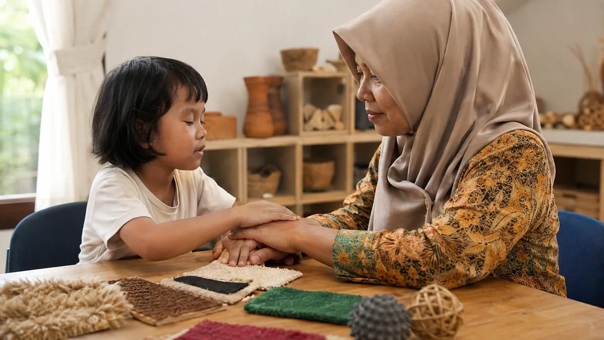

Tuna netra rungu bukan penjumlahan dari hambatan penglihatan dan hambatan pendengaran, melainkan kondisi ketiga dengan kebutuhan yang berbeda dari keduanya. Anak tuli biasanya memakai mata untuk menutupi telinganya. Anak buta biasanya memakai telinga untuk menutupi matanya. Anak dengan kedua hambatan sekaligus kehilangan kedua jalan pintas itu, sehingga dunia tidak datang kepadanya. Dunia harus dibawa ke dalam jangkauan tangannya.
Artikel ini membahas kondisi tersebut secara khusus: apa yang membedakannya, penyebab yang paling sering ditemukan pada anak, cara berkomunikasi lewat sentuhan, penataan rutinitas harian, cara menilai kemampuan anak tanpa meremehkannya, serta jalur dukungan dan hak di Indonesia. Pembahasan ini berbeda dari tunaganda yang mencakup kombinasi hambatan apa pun, dan berbeda pula dari disabilitas sensorik yang membahas hambatan indra secara umum. Untuk masing-masing hambatan secara terpisah, lihat tuna rungu.
Skalanya perlu diketahui. World Health Organization mencatat bahwa sekitar 430 juta orang membutuhkan rehabilitasi untuk gangguan pendengaran yang melumpuhkan, termasuk 34 juta anak, dan bahwa setidaknya 2,2 miliar orang mengalami hambatan penglihatan jauh atau dekat. Kelompok yang mengalami keduanya jauh lebih kecil, dan justru karena itu sering luput dari perhatian sistem layanan.
Daftar Isi
- Apa Itu Tuna Netra Rungu dan Mengapa Berbeda
- Penyebab yang Paling Sering Ditemukan pada Anak
- Sindrom Usher Lebih Dekat
- Cara Anak Tuna Netra Rungu Berkomunikasi
- Menata Rutinitas dan Lingkungan Sehari-hari
- Menilai Kemampuan Anak Tanpa Meremehkannya
- Jalur Dukungan dan Hak di Indonesia
- Kesalahan yang Sering Terjadi
- FAQ Tuna Netra Rungu
Apa Itu Tuna Netra Rungu dan Mengapa Berbeda
Tuna netra rungu, yang dalam literatur internasional disebut deafblindness atau dual sensory impairment, adalah kondisi ketika seseorang mengalami hambatan penglihatan dan pendengaran sekaligus. Istilah ini tidak berarti buta total dan tuli total. Sebagian besar anak dengan kondisi ini masih memiliki sisa penglihatan, sisa pendengaran, atau keduanya. Yang menentukan bukan derajat masing-masing hambatan, melainkan kenyataan bahwa keduanya terganggu bersamaan.
Penglihatan dan pendengaran sering disebut indra jarak jauh karena keduanya memberi informasi tentang hal-hal yang berada di luar jangkauan tubuh. Melalui keduanya, anak tahu bahwa ada orang mendekat, bahwa makanan sedang disiapkan di dapur, atau bahwa hujan turun di luar. Ketika keduanya terbatas, informasi itu tidak sampai. Anak hanya mengetahui apa yang menyentuh tubuhnya atau apa yang berada dalam jangkauan tangannya.
Konsekuensinya sangat luas. Anak bisa terkejut ketika tiba-tiba disentuh, karena tidak melihat atau mendengar orang datang. Anak bisa tampak pasif, padahal ia tidak memiliki cara untuk mengetahui bahwa ada sesuatu yang menarik di sekitarnya. Anak bisa terlihat tidak berminat bersosialisasi, padahal ia tidak tahu ada teman di dekatnya. Perilaku yang tampak seperti penolakan sering sebenarnya merupakan ketiadaan informasi.
Kelompok ini juga sangat beragam. Kajian di Frontiers in Psychology menekankan bahwa anak deafblind berbeda satu sama lain dalam jenis dan tingkat kehilangan penglihatan maupun pendengaran, usia saat kehilangan itu terjadi, kondisi kesehatan penyerta, kemampuan kognitif, bentuk komunikasi yang dipakai, dan riwayat pendidikannya. Karena itu tidak ada satu pendekatan tunggal yang cocok untuk semua anak deafblind.
Satu pembeda penting adalah waktu terjadinya. Anak dengan kondisi bawaan sejak lahir belum pernah membangun bahasa melalui penglihatan atau pendengaran, sehingga bahasa harus dibangun sepenuhnya melalui sentuhan dan gerak tubuh. Anak yang kehilangan salah satu atau kedua indranya setelah bahasa terbentuk memiliki titik awal yang berbeda, dan tantangannya lebih banyak berupa penyesuaian cara mengakses bahasa yang sudah dimiliki.
Inti Singkat
Tuna netra rungu adalah hambatan penglihatan dan pendengaran yang terjadi bersamaan. Ia bukan penjumlahan dua kondisi, melainkan kondisi tersendiri, karena anak kehilangan kedua indra yang biasanya dipakai untuk saling menutupi. Sentuhan menjadi jalur utama untuk bahasa, informasi, dan rasa aman.
Penyebab yang Paling Sering Ditemukan pada Anak
| Penyebab | Sifat | Gambaran ringkas |
|---|---|---|
| Sindrom Usher | Genetik, diturunkan | Gangguan pendengaran disertai kehilangan penglihatan akibat retinitis pigmentosa yang berkembang bertahap |
| Sindrom CHARGE | Genetik, umumnya mutasi baru | Kelainan bawaan pada mata, jantung, saluran hidung, pertumbuhan, dan telinga |
| Sindrom rubela kongenital | Infeksi saat kehamilan, dapat dicegah | Gangguan pendengaran, kelainan mata, kelainan jantung bawaan, dan keterlambatan perkembangan |
| Kelahiran sangat prematur | Komplikasi perinatal | Kombinasi retinopati prematuritas dan gangguan pendengaran akibat komplikasi masa awal kehidupan |
| Infeksi bawaan lain dan meningitis | Didapat | Kerusakan pada koklea dan saraf mata akibat infeksi berat pada masa awal kehidupan |
Sindrom CHARGE termasuk penyebab yang perlu dikenali sejak dini. MedlinePlus dari National Library of Medicine menjelaskan bahwa sindrom CHARGE terjadi pada sekitar 1 dari 8.500 sampai 10.000 kelahiran. Namanya merupakan singkatan dari beberapa ciri yang sering muncul: coloboma atau celah pada struktur mata, kelainan jantung, penyempitan atau penyumbatan saluran hidung belakang, hambatan pertumbuhan, kelainan pada organ kelamin, serta kelainan telinga. Sebagian besar kasus berkaitan dengan perubahan pada gen CHD7.
Sindrom rubela kongenital layak mendapat perhatian khusus karena bisa dicegah. World Health Organization mencatat bahwa rubela adalah penyebab cacat lahir yang paling banyak dapat dicegah dengan vaksinasi, dengan perkiraan 100.000 bayi lahir dengan sindrom rubela kongenital setiap tahun di seluruh dunia. WHO juga menyebutkan bahwa perempuan yang terinfeksi rubela pada awal kehamilan memiliki kemungkinan 90 persen menularkan virus kepada janinnya, dan kerusakan paling berat terjadi pada trimester pertama. Anak dengan sindrom ini dapat mengalami gangguan pendengaran, kelainan mata, kelainan jantung bawaan, serta keterlambatan perkembangan.
Perlu ditekankan bahwa mengetahui penyebab bukan sekadar soal label. Penyebab menentukan apakah kondisi bersifat menetap atau progresif, apakah ada risiko bagi anak berikutnya dalam keluarga, dan pemeriksaan berkala apa yang perlu dijadwalkan. Untuk anak dengan sindrom Usher, misalnya, mengetahui diagnosis memungkinkan keluarga menyiapkan keterampilan orientasi dan mobilitas sebelum penglihatan menurun jauh.
Sindrom Usher Lebih Dekat
Sindrom Usher adalah penyebab genetik yang paling banyak dibicarakan dalam konteks deafblindness. National Institute on Deafness and Other Communication Disorders menyebutkan bahwa sindrom Usher memengaruhi sekitar 4 sampai 17 orang per 100.000 penduduk dan mencakup sekitar 50 persen dari seluruh kasus deafblindness yang bersifat keturunan. Kondisi ini juga diperkirakan mencakup 3 sampai 6 persen dari seluruh anak tuli, dan 3 sampai 6 persen lainnya dari anak dengan pendengaran kurang.
| Aspek | Tipe 1 | Tipe 2 | Tipe 3 |
|---|---|---|---|
| Pendengaran saat lahir | Kehilangan pendengaran berat sekali atau tuli sejak lahir | Gangguan pendengaran sudah ada, derajatnya bervariasi | Pendengaran normal saat lahir |
| Perjalanan pendengaran | Menetap sejak awal | Umumnya stabil, banyak yang terbantu alat bantu dengar | Menurun bertahap, sering muncul pada masa remaja |
| Keseimbangan | Terganggu, sehingga anak lebih lambat duduk tanpa disangga | Umumnya tidak terganggu | Dapat terganggu, bervariasi antarindividu |
| Penglihatan | Masalah penglihatan biasanya mulai sebelum usia 10 tahun | Kehilangan penglihatan berkembang pada akhir masa kanak atau remaja | Kehilangan penglihatan berkembang bertahap |
| Komunikasi yang umum | Sering memakai bahasa isyarat sejak dini | Sebagian besar berkomunikasi secara lisan | Bergantung pada perjalanan kondisinya |
NIDCD menyebutkan bahwa tipe 1 dan tipe 2 bersama-sama mencakup hingga 95 persen kasus sindrom Usher. MedlinePlus menambahkan bahwa tipe 3 hanya mencakup sekitar 2 persen dari seluruh kasus secara global, meskipun proporsinya jauh lebih tinggi pada populasi tertentu, misalnya sekitar 40 persen di Finlandia. Kehilangan penglihatan pada sindrom Usher disebabkan oleh retinitis pigmentosa, penyakit pada lapisan retina yang mula-mula menyulitkan penglihatan pada cahaya redup dan mempersempit lapangan pandang.
Bagi keluarga, implikasi praktisnya jelas. Anak tuli yang lambat duduk tanpa disangga perlu dievaluasi kemungkinan sindrom Usher tipe 1. Anak tuli yang mulai sering menabrak benda di ruangan yang remang atau kesulitan menemukan barang di sisi pandangannya perlu diperiksa matanya, bukan dianggap ceroboh. Karena penglihatan adalah jalur utama anak tuli untuk mengakses bahasa isyarat, penurunan penglihatan pada anak tuli adalah persoalan bahasa, bukan sekadar persoalan mata.
Cara Anak Tuna Netra Rungu Berkomunikasi
Bahasa isyarat taktil adalah bentuk yang paling dikenal. Anak meletakkan tangannya di atas tangan lawan bicara yang sedang berisyarat, lalu merasakan bentuk dan gerakan isyarat itu melalui sentuhan. Bagi anak dengan sisa penglihatan, ada pula isyarat yang dilakukan dalam ruang yang dipersempit dan pada jarak dekat, menyesuaikan lapangan pandang anak yang menyempit. Dasar bahasa isyaratnya sendiri dapat dipelajari dari bahasa isyarat tuna rungu dan BISINDO.
Teknik hand-under-hand adalah prinsip yang perlu dipahami setiap pendamping. Alih-alih menggenggam tangan anak dari atas lalu menggerakkannya, orang dewasa meletakkan tangannya di bawah tangan anak. Dengan begitu anak tetap memegang kendali: ia bisa mengikuti, menekan lebih dalam untuk merasakan lebih jelas, atau menarik tangannya bila belum siap. Karena tangan adalah alat utama anak untuk mengenal dunia sekaligus untuk berbahasa, menguasai tangannya dari atas terasa seperti membungkam mulut seseorang.
Benda penanda dipakai untuk mewakili kegiatan yang akan berlangsung. Sendok berarti waktu makan. Handuk kecil berarti mandi. Potongan tali sepatu berarti keluar rumah. Anak memegang benda itu sebelum kegiatan dimulai, sehingga ia tahu apa yang akan terjadi. Fungsinya sejajar dengan kartu gambar pada jadwal visual anak autis, hanya saja informasinya disampaikan lewat sentuhan, bukan lewat penglihatan.
Sistem kalender berbasis benda adalah kelanjutannya. Beberapa benda penanda disusun berurutan dalam kotak atau rak, mewakili urutan kegiatan hari itu. Setelah satu kegiatan selesai, bendanya dipindahkan ke wadah selesai. Sistem ini memberi anak dua hal sekaligus: pemahaman tentang urutan waktu, dan kesempatan untuk mengetahui bahwa hari memiliki struktur yang bisa diandalkan.
Komunikasi haptik menyampaikan informasi lingkungan melalui sentuhan yang disepakati pada punggung, bahu, atau lengan anak. Contohnya, ketukan tertentu memberi tahu bahwa ada orang masuk ruangan, atau bahwa teman-teman sedang tertawa. Informasi semacam ini biasanya diperoleh orang lain secara otomatis lewat mata dan telinga. Tanpa haptik, anak berada di ruangan yang sama tetapi tidak berada dalam situasi yang sama.
Bagi anak yang mampu, braille dan huruf cetak besar tetap menjadi jalur penting untuk keaksaraan. Sebagian anak juga memakai isyarat huruf yang dieja pada telapak tangan. Yang perlu diingat, sebagian besar anak memakai kombinasi beberapa cara sekaligus, dan kombinasi itu berubah seiring perkembangan anak serta perubahan kondisi indranya.
Menata Rutinitas dan Lingkungan Sehari-hari
Prinsip pertama adalah memberi tahu sebelum menyentuh. Menyentuh anak yang tidak melihat dan tidak mendengar kedatangan kita akan mengejutkannya. Sepakati satu sentuhan pembuka yang selalu sama, misalnya menyentuh lengan bagian luar dua kali, sebelum melakukan apa pun. Sepakati pula tanda perpisahan sehingga anak tahu kapan kita pergi, dan tidak berbicara kepada ruangan kosong.
Prinsip kedua adalah menjaga letak benda tetap konsisten. Anak membangun peta ruangan di dalam ingatannya melalui sentuhan dan langkah. Memindahkan kursi, menggeser tempat sampah, atau meletakkan tas di jalur biasanya berarti menghapus sebagian peta itu. Bila memang perlu diubah, tunjukkan perubahannya kepada anak dan biarkan ia menelusuri letak barunya.
Prinsip ketiga adalah memanfaatkan sisa indra secara maksimal. Pencahayaan yang cukup tanpa silau membantu anak dengan sisa penglihatan. Kontras warna yang tegas antara piring dan meja, antara pegangan tangga dan dinding, memudahkan anak menemukan benda. Mengurangi gema dan kebisingan latar membantu anak dengan sisa pendengaran. Penyesuaian ini murah dan sering memberi dampak yang besar.
Prinsip keempat adalah membangun rutinitas yang dapat diprediksi. Urutan kegiatan yang tetap memberi anak rasa aman dan kesempatan mengantisipasi. Antisipasi sangat penting karena anak tidak dapat melihat atau mendengar persiapan yang sedang berlangsung. Rutinitas yang stabil menggantikan informasi yang biasanya datang lewat mata dan telinga.
Prinsip kelima adalah memberi waktu tunggu yang lebih panjang. Anak memerlukan waktu untuk menerima informasi lewat sentuhan, memprosesnya, lalu menyusun respons. Jeda yang terasa lama bagi orang dewasa sering merupakan waktu berpikir yang wajar bagi anak. Terburu-buru mengambil alih justru mengajarkan anak bahwa responsnya tidak dinanti.
Prinsip keenam adalah melibatkan pendekatan sensorik dan kemandirian secara terpadu. Keterampilan mengurus diri, memegang alat makan, dan berpindah dengan aman berkembang melalui latihan bertahap yang biasanya melibatkan terapi okupasi. Pemahaman tentang cara tubuh memproses masukan sentuhan dan gerak dibahas dalam sensori integrasi.
Sentuhan Adalah Jalur Bahasa, Bukan Sekadar Bantuan Fisik
Menuntun anak agar sampai ke kursi memang membantu, tetapi itu belum berkomunikasi. Berkomunikasi berarti memberi tahu anak apa yang akan terjadi, menunggu tanggapannya, dan menanggapi balik tanda yang ia berikan. Anak yang setiap hari hanya dipindahkan dari satu tempat ke tempat lain akan belajar bahwa dunia terjadi kepadanya, bukan bersamanya.
Menilai Kemampuan Anak Tanpa Meremehkannya
Ini persoalan yang serius dan sering merugikan anak. Sebagian besar alat tes kemampuan berpikir dirancang dengan asumsi bahwa peserta dapat melihat gambar dan mendengar instruksi. Ketika alat itu dipakai pada anak deafblind tanpa penyesuaian, yang terukur adalah hambatan akses, bukan kemampuan berpikirnya. Anak lalu dinilai memiliki hambatan intelektual berat, dan penilaian keliru itu menentukan seluruh layanan yang ia terima sesudahnya.
Kajian di Frontiers in Psychology secara khusus mengingatkan hal ini. Penulisnya menyatakan bahwa penilai harus menyadari keterbatasan tes berbasis norma bila dipakai untuk mengevaluasi fungsi kognitif anak deafblind, dan menyarankan penggunaan beberapa jalur penilaian sekaligus: penilaian dengan banyak metode dan banyak sumber informasi, penilaian dalam situasi sehari-hari yang nyata, serta penilaian dinamis yang melihat bagaimana anak belajar ketika diberi bantuan. Pendekatan berlapis ini disebut perlu untuk mengungkap kemampuan dan potensi yang sebenarnya.
Secara praktis, orang tua dan guru dapat menuntut tiga hal dalam setiap proses asesmen. Pertama, apakah cara penyampaian soal sudah disesuaikan dengan jalur indra yang bisa diakses anak. Kedua, apakah anak diberi waktu tunggu yang memadai. Ketiga, apakah pengamatan dalam kegiatan sehari-hari ikut menjadi bahan penilaian, bukan hanya hasil tes di ruang tertutup. Kerangka umum proses ini dibahas dalam asesmen anak berkebutuhan khusus.
Hasil asesmen kemudian perlu diterjemahkan menjadi tujuan yang konkret dan terukur dalam program pembelajaran individual. Untuk anak tuna netra rungu, tujuan yang bermakna biasanya berkisar pada komunikasi, kemandirian, orientasi dan mobilitas, serta partisipasi dalam kegiatan bersama, bukan semata pada capaian akademik yang diukur dengan standar kelas.
Jalur Dukungan dan Hak di Indonesia
Dasar hukumnya adalah Undang-Undang Nomor 8 Tahun 2016 tentang Penyandang Disabilitas, yang menjamin hak atas pendidikan, kesehatan, aksesibilitas, dan bebas dari diskriminasi, serta mewajibkan penyediaan akomodasi yang layak. Kerangka hukum dan pengelompokan ragam disabilitas dijelaskan lebih lanjut dalam golongan disabilitas menurut UU 8/2016 dan penyandang disabilitas.
Untuk pendidikan, ada dua jalur yang tersedia. Sekolah luar biasa memiliki tenaga dan sarana khusus, dan sebagian memiliki pengalaman menangani hambatan sensorik ganda. Sekolah reguler penyelenggara pendidikan inklusi memungkinkan anak belajar bersama teman sebayanya, dengan syarat tersedia pendampingan yang memahami komunikasi taktil. Penjelasan tentang keduanya ada pada SLB, jenis SLB menurut kebutuhan anak, dan pendidikan inklusi. Peran pendamping di kelas dibahas pada guru pembimbing khusus dan shadow teacher.
Untuk layanan kesehatan, Kementerian Kesehatan RI menyediakan kumpulan tautan penting untuk anak disabilitas yang dapat menjadi titik awal keluarga mencari layanan. Yang perlu diperjuangkan keluarga adalah pemeriksaan pada kedua indra, bukan hanya pada indra yang lebih dulu bermasalah, serta pemeriksaan berkala karena sebagian kondisi bersifat progresif.
Kesenjangan layanan bagi kelompok ini bukan hanya persoalan Indonesia. Analisis terhadap 36 survei rumah tangga di negara berpenghasilan rendah dan menengah yang diterbitkan di Archives of Disease in Childhood mencakup 446.233 anak berusia 2 sampai 17 tahun, termasuk 232 anak dengan deafblindness. Studi itu menemukan bahwa anak dengan deafblindness menghadapi ketimpangan pada indikator kesehatan dan pendidikan dibandingkan anak dengan disabilitas lain maupun anak tanpa disabilitas.
Tinjauan pustaka yang lebih luas memberi gambaran serupa tentang pengalaman hidupnya. Kajian ruang lingkup yang diterbitkan di PLOS ONE menelaah 54 studi dan menemukan bahwa penyandang deafblindness, baik yang bawaan maupun yang didapat kemudian, mengalami kesulitan dalam komunikasi, mobilitas, kegiatan sehari-hari, dan interaksi sosial, serta cenderung merasa terisolasi secara sosial. Kajian itu juga menyimpulkan bahwa tingkat partisipasi dibentuk oleh interaksi antara faktor pribadi dan faktor lingkungan seperti sikap orang sekitar, teknologi, dan ketersediaan dukungan. Artinya, sebagian besar hambatan itu dapat dikurangi oleh lingkungan yang berubah.
Kesalahan yang Sering Terjadi
Kesalahan pertama adalah berhenti memeriksa setelah satu hambatan ditemukan. Anak yang sudah didiagnosis tuli sering tidak lagi diperiksa matanya, dan anak dengan hambatan penglihatan sering tidak diperiksa pendengarannya. Padahal justru pada anak dengan satu hambatan sensorik, kemungkinan hambatan kedua perlu dicari secara aktif dan diulang secara berkala.
Kesalahan kedua adalah menyamakan pendampingannya dengan pendampingan anak tuli atau anak buta. Strategi untuk anak tuli banyak mengandalkan penglihatan, dan strategi untuk anak buta banyak mengandalkan pendengaran. Menerapkan salah satunya tanpa penyesuaian akan gagal, karena jalur yang diandalkan justru merupakan jalur yang terganggu. Pembahasan hak dan pendampingan untuk hambatan pendengaran saja ada pada disabilitas tuna rungu dan bahasa tuna rungu.
Kesalahan ketiga adalah menganggap anak yang tidak merespons berarti tidak memahami. Respons pada anak tuna netra rungu sering sangat halus: perubahan ketegangan otot, gerakan jari, perubahan pola napas, atau berhentinya gerakan tubuh. Pendamping yang hanya menunggu jawaban lisan atau kontak mata akan menyimpulkan bahwa tidak ada komunikasi, padahal komunikasi sedang berlangsung dalam bahasa yang belum ia baca.
Kesalahan keempat adalah mengganti pendamping terlalu sering. Membangun bahasa lewat sentuhan menuntut kepercayaan dan kosakata bersama yang tumbuh perlahan antara anak dan orang tertentu. Pergantian pendamping yang sering memaksa proses itu dimulai dari nol berulang kali. Bila pergantian tidak terhindarkan, catat kosakata sentuhan yang sudah dipakai anak dan wariskan kepada pendamping berikutnya.
Kesalahan kelima adalah menunda pemberian bahasa sambil menunggu kepastian diagnosis atau ketersediaan alat bantu. Tahun-tahun awal perkembangan bahasa tidak dapat diulang. Mulailah membangun rutinitas, benda penanda, dan sentuhan yang bermakna sejak hari ini, sambil proses medis berjalan. Prinsip ini sejalan dengan pembahasan intervensi dini.
Kesalahan keenam adalah membicarakan anak di depannya seolah ia tidak hadir. Karena anak tidak menunjukkan reaksi yang terlihat, orang dewasa sering merasa bebas membahas kondisinya di dekatnya. Selain tidak menghormati anak, kebiasaan ini juga memperkuat anggapan keliru bahwa anak tidak memiliki kehidupan batin. Cara pandang yang lebih tepat tentang istilah dan sikap dibahas dalam difabel dan disabilitas.
FAQ Tuna Netra Rungu
1. Apa itu tuna netra rungu?
Tuna netra rungu, yang dalam literatur internasional disebut deafblindness atau dual sensory impairment, adalah kondisi ketika seseorang mengalami hambatan penglihatan dan pendengaran sekaligus. Tingkatnya sangat beragam, dari hambatan ringan pada keduanya sampai kebutaan dan ketulian total. Yang membuatnya berbeda adalah kedua indra jarak jauh terganggu bersamaan, sehingga anak tidak bisa memakai satu indra untuk menutupi keterbatasan indra yang lain.
2. Apakah tuna netra rungu sama dengan tunaganda?
Tidak persis sama. Tunaganda adalah istilah luas untuk kombinasi dua atau lebih hambatan apa pun. Tuna netra rungu adalah kombinasi spesifik antara hambatan penglihatan dan pendengaran, dan diperlakukan sebagai kategori tersendiri karena kebutuhan komunikasinya sangat khas. Anak dengan tuna netra rungu bisa saja juga memiliki hambatan lain, tetapi kombinasi dua indra jarak jauh inilah yang menentukan pendekatan pendampingannya.
3. Apa penyebab tuna netra rungu yang paling sering pada anak?
Yang paling sering dibahas adalah sindrom Usher, sindrom CHARGE, sindrom rubela kongenital, dan komplikasi kelahiran sangat prematur. NIDCD menyebutkan bahwa sindrom Usher saja mencakup sekitar 50 persen dari seluruh kasus deafblindness yang bersifat keturunan. Sindrom CHARGE menurut MedlinePlus terjadi pada sekitar 1 dari 8.500 sampai 10.000 kelahiran. Rubela kongenital dapat dicegah melalui imunisasi.
4. Bagaimana anak tuna netra rungu berkomunikasi?
Bergantung pada sisa penglihatan dan pendengarannya. Pilihannya mencakup bahasa isyarat taktil yang dirasakan lewat sentuhan tangan, isyarat dalam ruang penglihatan yang dipersempit, benda penanda yang mewakili kegiatan, sistem kalender berbasis benda, komunikasi haptik berupa sentuhan di punggung atau lengan untuk menyampaikan informasi lingkungan, serta braille atau huruf besar bagi yang mampu membacanya. Sebagian besar anak memakai kombinasi beberapa cara sekaligus.
5. Apa itu teknik hand-under-hand dan mengapa lebih dianjurkan?
Hand-under-hand berarti orang dewasa meletakkan tangannya di bawah tangan anak, sehingga anak yang memutuskan seberapa jauh ia ingin mengikuti dan kapan ingin berhenti. Ini berbeda dari hand-over-hand, yaitu menggenggam tangan anak dari atas dan menggerakkannya. Karena tangan adalah alat utama anak untuk mengenal dunia sekaligus untuk berbahasa, menguasai tangan anak dari atas terasa seperti membungkam. Hand-under-hand menjaga rasa aman dan kendali anak.
6. Apakah anak tuna netra rungu bisa bersekolah?
Bisa, dan berhak. Undang-Undang Nomor 8 Tahun 2016 tentang Penyandang Disabilitas menjamin hak atas pendidikan tanpa diskriminasi beserta akomodasi yang layak. Dalam praktiknya, anak dapat bersekolah di SLB maupun di sekolah reguler yang menyelenggarakan pendidikan inklusi, dengan syarat tersedia pendamping yang memahami komunikasi taktil, program pembelajaran yang disusun individual, dan lingkungan yang ditata konsisten.
7. Mengapa kemampuan anak tuna netra rungu sering dinilai terlalu rendah?
Karena sebagian besar alat tes baku mengandalkan instruksi lisan dan gambar. Ketika anak tidak dapat mengakses instruksinya, hasil tes menggambarkan hambatan akses, bukan kemampuan berpikir anak. Kajian di Frontiers in Psychology mengingatkan bahwa penilai perlu menyadari keterbatasan tes berbasis norma pada anak deafblind, dan menyarankan pendekatan yang memakai banyak metode, banyak sumber informasi, penilaian dalam situasi sehari-hari, serta penilaian dinamis.
8. Apa langkah pertama yang paling penting bagi keluarga?
Pastikan kedua indra diperiksa, bukan hanya satu. Anak yang sudah diketahui tuli tetap perlu pemeriksaan mata berkala, dan anak dengan hambatan penglihatan tetap perlu pemeriksaan pendengaran. Banyak kasus terlambat dikenali karena satu hambatan sudah ditemukan lebih dulu sehingga hambatan kedua tidak dicari. Setelah itu, mulailah membangun rutinitas yang dapat diprediksi dan cara berkomunikasi lewat sentuhan sejak dini.
Baca Juga Artikel Terkait:
Sumber Resmi & Referensi Authoritative
Konten artikel ini diperkuat dengan referensi dari lembaga resmi pemerintah dan organisasi authoritative:
- UU No. 8 Tahun 2016 tentang Penyandang Disabilitas peraturan.bpk.go.id
- Kementerian Kesehatan RI: Kumpulan Link Penting untuk Anak Disabilitas ayosehat.kemkes.go.id
- NIDCD (NIH): What Is Usher Syndrome? Symptoms and Treatment nidcd.nih.gov
- MedlinePlus Genetics (NIH): Usher Syndrome medlineplus.gov
- MedlinePlus Genetics (NIH): CHARGE Syndrome medlineplus.gov
- World Health Organization: Rubella dan Congenital Rubella Syndrome who.int
- World Health Organization: Deafness and Hearing Loss who.int
- World Health Organization: Blindness and Vision Impairment who.int
- Frontiers in Psychology: Cognitive Assessment of Children Who Are Deafblind pmc.ncbi.nlm.nih.gov
- Archives of Disease in Childhood: Health, Education and Well-being for Children With Deafblindness pmc.ncbi.nlm.nih.gov
- PLOS ONE: Participation Experiences of People With Deafblindness or Dual Sensory Loss (Scoping Review) pmc.ncbi.nlm.nih.gov
- Helen Keller Services: Layanan dan Sumber untuk DeafBlind helenkeller.org
Disclaimer Medis & Pendidikan: Artikel ini bersifat edukasi umum dan bukan pengganti konsultasi profesional. Untuk diagnosis, asesmen, atau penanganan anak berkebutuhan khusus, silakan konsultasikan langsung dengan dokter anak, dokter spesialis mata, dokter spesialis THT, audiolog, psikolog perkembangan, terapis okupasi, atau tenaga ahli pendidikan khusus yang berlisensi. YUKA Indonesia mendukung pendekatan multidisiplin dan tidak menggantikan peran tenaga medis maupun terapis profesional.